Probabilistic Language Models
Why we need a language model
- Assign a probability to a sentence
- Machine Translation:
- P(high winds tonite) > P(large winds tonite)
- Spell Correction
- The office is about fifteen minuets from my house
- P(about fifteen minutes from) > P(about fifteen minuets from)
- Speech Recognition
- P(I saw a van) >> P(eyes awe of an)
- Summarization, question-answering, etc., etc.!!
- Machine Translation:
What is language model
-
Goal: compute the probability of a sentence or sequence of words:
- P(W) = P(w1,w2,w3,w4,w5…wn)
-
Related task: probability of an upcoming word: P(w5|w1,w2,w3,w4)
-
A model that computes either of these:
P(W) or P(wn|w1,w2…wn-1) is called a language model (LM).
How to compute P(w)
The Chain Rule
- The Chain Rule applied to compute joint probability of words in sentence
-
Example:
P(“its water is so transparent”) =
P(its)
* P(water |its)
* P(is | its water)
* P(so | its water is)
* P(transparent | its water is so)
How to estimate these probabilities
Markov Assumption
Unigram model
- Simplest case
Bigram model
-
Condition on the previous word
N-gram models
-
We can extend to trigrams, 4-grams, 5-grams
-
In general this is an insufficient model of language because language has long-distance dependencies
Estimating N-gram Probabilities
bigram probabilities
- The Maximum Likelihood Estimate (MLE)
-
Example:
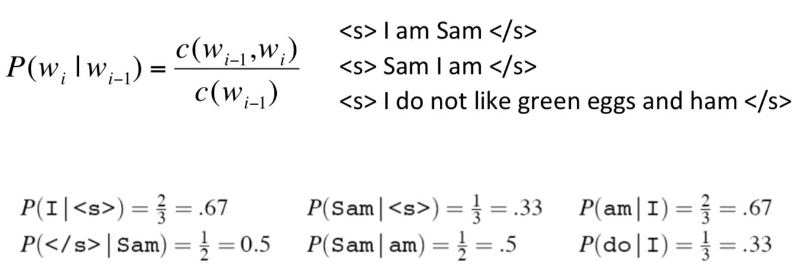 -
Raw bigram counts
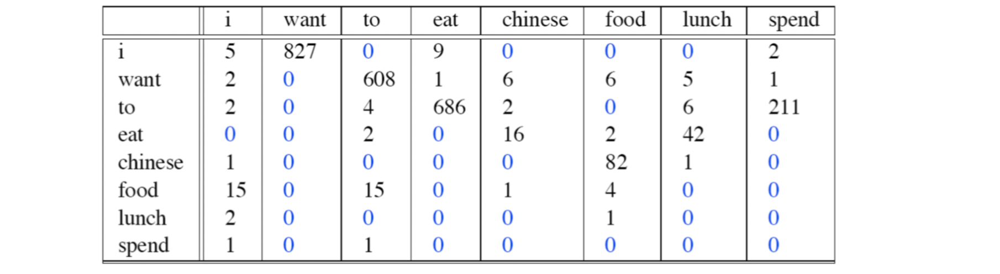
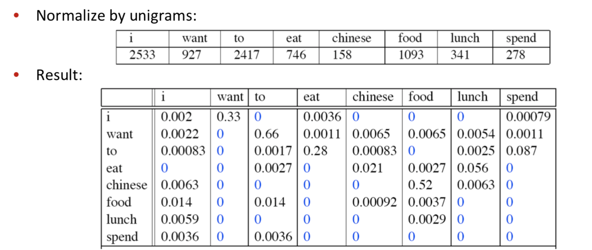
Bigram estimates of sentence probabilities
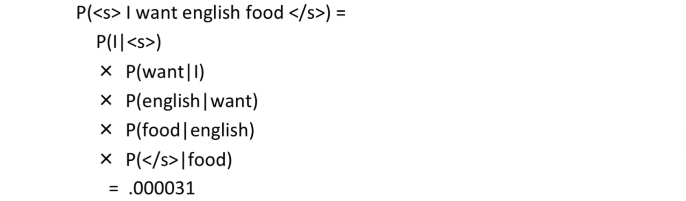
Evaluation and Perplexity
Extrinsic evaluation
- Time-consuming; can take days or weeks
Intrinsic evaluation: perplexity
- The best language model is one that best predicts an unseen test set
- Gives the highest P(sentence)
- Perplexity(复杂度) is the inverse probability of the test set, normalized by the number of words
- Minimizing perplexity is the same as maximizing probability
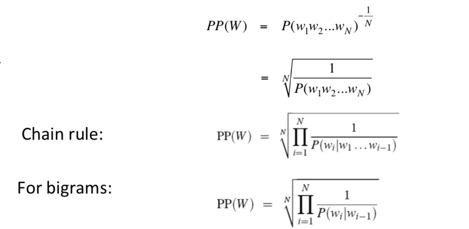
Generalization and zeros
- Bigrams with zero probability
- mean that we will assign 0 probability to the test set!
How to avoid 0?
Smoothing: Add-one (Laplace) smoothing
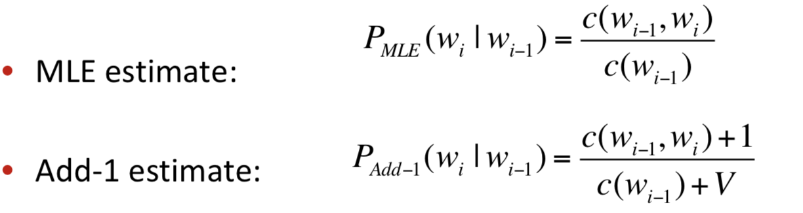
- Disadvange:
- if c(wi-1, wi) is big enough, +1 does not matter too much
- if c(wi-1, wi) = 0, the result is always the same! It’s not fair.
Interpolation
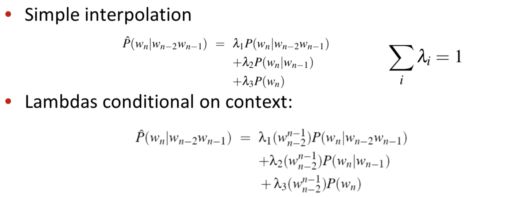
- Even if prob of bigram and 3-grams all are 0, we can still add the prob of unigram which can not be 0.
OOV
-
OOV: Out of Vocabulary
-
Create an unknown word token
<UNK>- Training of
<UNK>probabilities- Create a fixed lexicon L of size V
- At text normalization phase, any training word not in L changed to
<UNK> - Now we train its probabilities like a normal word
- At decoding time
- If text input: Use UNK probabilities for any word not in training
- Training of
Stupid backoff
-
Smoothing for Web-scale N-grams
-
backoff : go back to a n-1 gram level to calculate the probabilities when you encounter a word with prob=0.
-
No discounting, just use relative frequencies
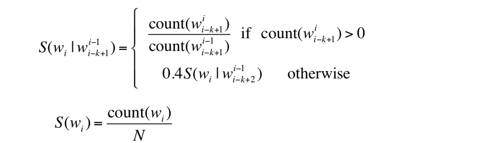
Kneser-Ney Smoothing
Absolute Discounting Interpolation
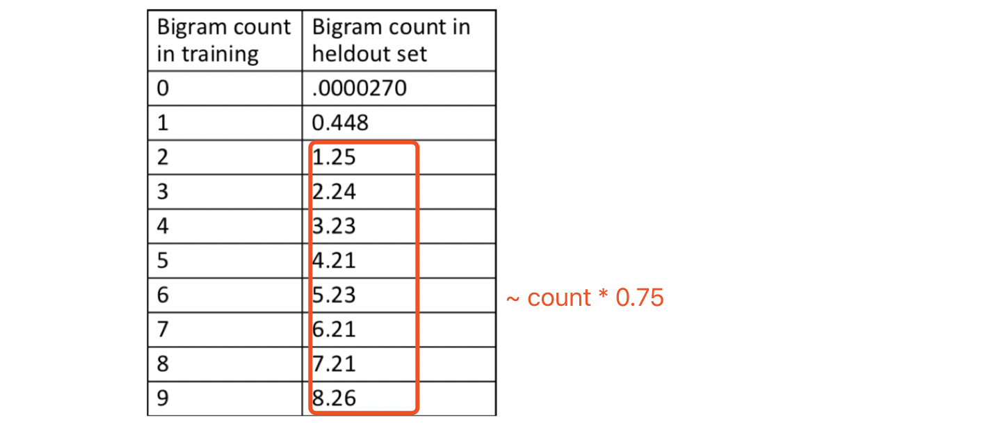
- Save ourselves some time and just subtract 0.75 (or some d)!
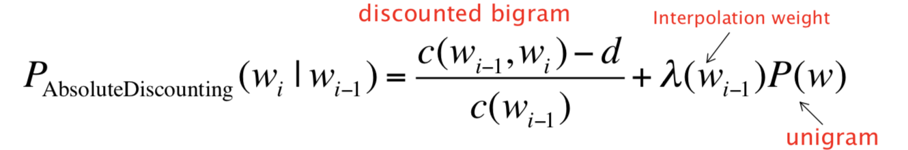
Kneser-Ney Smoothing
-
Better estimate for probabilities of lower-order unigrams!
-
Instead of P(w): “How likely is w” , Pcontinuation(w): “How likely is w to appear as a novel continuation?
- For each word, count the number of bigram types it completes
- Every bigram type was a novel continuation the first time it was seen
-
Normalized by the total number of word bigram types
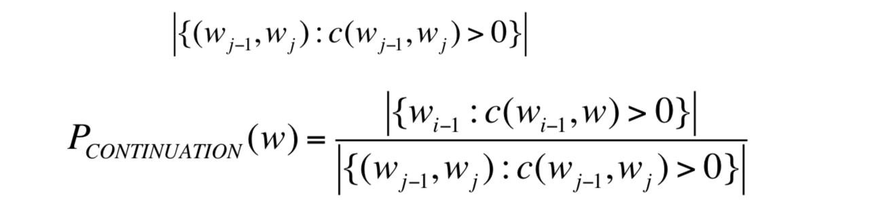
- Alternative metaphor: The number of # of word types seen to precede w

- normalized by the # of words preceding all words:
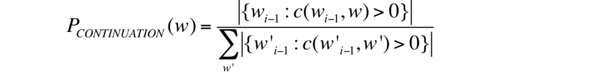
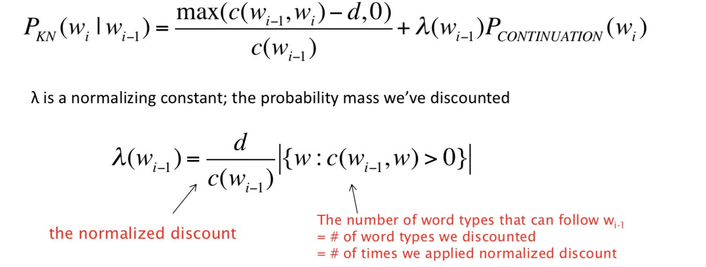
- Recursive formulation
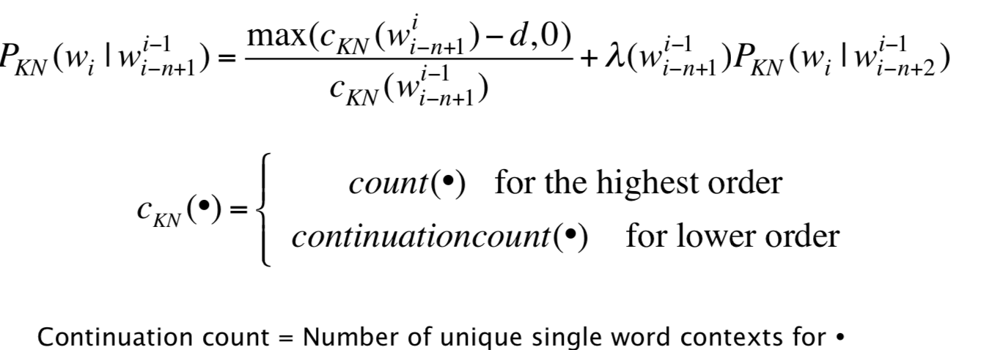
-
Example
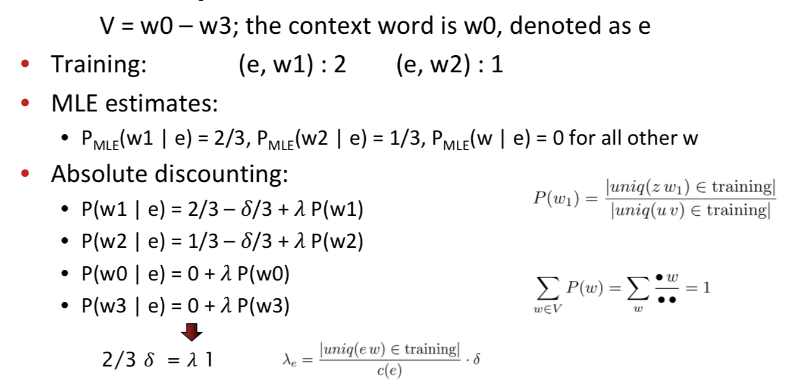